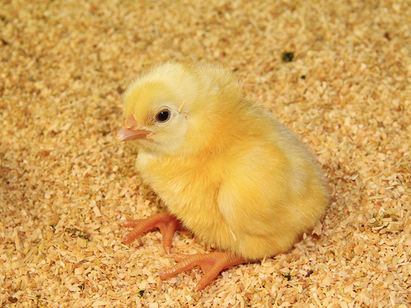

Hardblog
Un blog para los que van un paso adelante
Hardblog
Un blog para los que van un paso adelante
HISTORIA DEL POLLO 🐣
Habia un pollo que vivía contento en su granja, le gustaba jugar, comer y salir a explorar pero una mañana, se dio cuenta que habia un mundo mas allá de la granja donde vivía. El pollo observaba todas las mañanas, como salían pollos en un carro debido a que los elegían, pero nunca regresaban. El pollo estaba ansioso por explorar donde era el nuevo hogar de sus amigos, e incluso su familia como su tío don Pepe el pollo y su abuela doña Cecilia. Sin embargo, su madre nunca le permitia hablar de ese tema por motivos que el pollo desconocia.

Así que un día, temprano, el pollo se escondió en el carro donde se encontraban los pollos seleccionados antes de que arrancara y salió de la granja. El camino fue fascinante, el pollo vió como era el mundo fuera de la granja, habia construcciones altas, parques y seres que interactuaban entre ellos. Pero de repente, llegó a un lugar en el que habia un pollo de imágen junto a un cerdo y una vaca. El pollo pensó que encontraría a sus amigos, a su tío e incluso a más animales. Estaba ansioso por esuchar como era su nueva vida, pero lo unico que encontró, fue a sus amigos sin cabeza, atravesados por una barilla de metal, dando vueltas en un sistema a muy alta temperatura y a su tio colgado de las patas, sin piel y muerto.